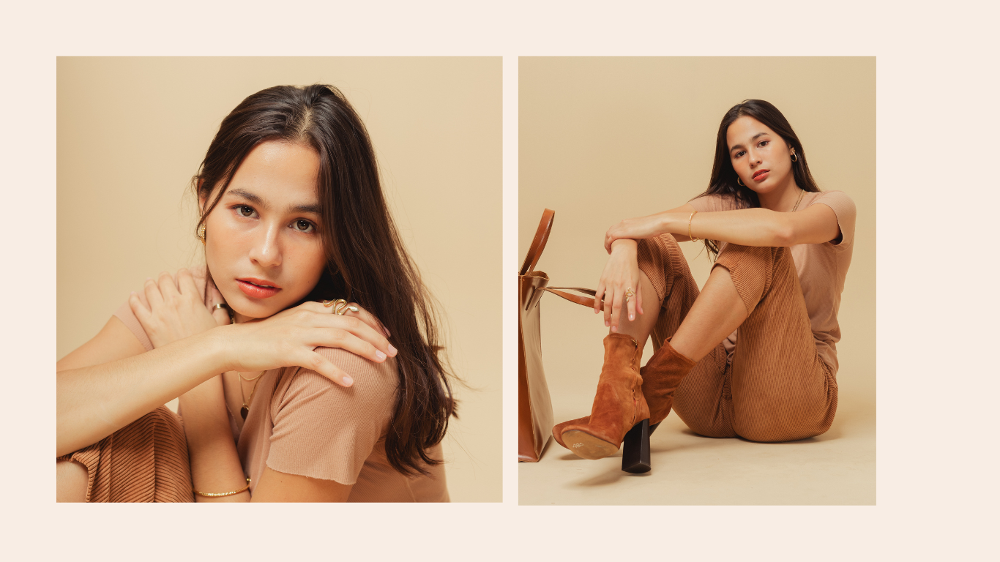

Seja bem-vindo(a) à emocionante jornada de Lia Maria na indústria da moda. Desde pequena idade, Lia demonstrou um fascínio incomparável pelo mundo da moda e da arte, e sua determinação a levou a trilhar um caminho único e inspirador. Nascida em uma pequena cidade, Lia sempre sonhou alto e nunca deixou que os obstáculos a impedissem de perseguir seus sonhos. Com um olhar cativante e uma presença magnética, ela conquistou seu espaço nas passarelas e nas lentes das câmeras, ganhando reconhecimento por sua beleza única e talento inegável. Com o passar dos anos, Lia Maria se tornou um nome conhecido em diversas campanhas publicitárias de marcas de prestígio. Sua versatilidade e habilidade em se transformar em diferentes estilos encantam e inspiram fotógrafos, estilistas e seguidores ao redor do mundo. Além de sua carreira no mundo da moda, Lia também é apaixonada por viagens e aventuras. Ela acredita que cada lugar visitado é uma oportunidade de expandir seus horizontes e enriquecer sua alma criativa. Essa paixão pela descoberta e pela beleza do mundo transparece em suas fotos e projetos. No universo da moda, Lia Maria também se destaca como uma consultora de estilo talentosa. Sua capacidade de compreender e realçar a beleza única de cada indivíduo faz dela uma profissional altamente requisitada por personalidades e influenciadores. Fora das câmeras, Lia é conhecida por sua personalidade cativante e sua dedicação em apoiar causas sociais. Ela usa sua influência para conscientizar sobre questões importantes e contribuir para um mundo mais inclusivo e sustentável. Este site é uma pequena janela para a vida e a carreira de Lia Maria. Explore nossas páginas para descobrir mais sobre suas viagens, suas campanhas publicitárias inesquecíveis e sua jornada única na moda. Agradecemos sua visita e esperamos que esta experiência lhe permita conhecer e se encantar pela história e pelo talento dessa incrível modelo, a inesquecível Lia Maria.